Page de
début en allemand/Deutsche Startseite "Architektur-Magazin Altbau und Denkmalpflege Informationen"
Page de
début en allemand/Deutsche Startseite "Architektur-Magazin Altbau und Denkmalpflege Informationen"
Rechercher sur Web site/Homepage + Sitemap
Edith Piaf: sa vie et ses chansons: Les liens entre la vie et l'oeuvre de la célèbre chanteuse Edith Piaf - Un travail spécialisés par Karolina Fischer
Cette page est traduit avec l'aide de Google. Versions originale:
English Version: Mold/Mildew Attack, what to do? - A Guide +++ Deutsche Version: Schimmelpilzbefall - Ein Leitfaden
Bon ou mauvais chauffer? - Le système de tempérage
 Heating Costs Saving and Health Protection by the Interior Room Surface Heating System +++
Low-cost Repair, Renovation + Refurbishing of your old House
Heating Costs Saving and Health Protection by the Interior Room Surface Heating System +++
Low-cost Repair, Renovation + Refurbishing of your old House 
Altbauten kostengünstig sanieren: Heiße Tipps gegen Sanierpfusch im bestimmt frechsten Baubuch aller Zeiten (PDF eBook + Druckversion)
Edith Piaf: sa vie et ses chansons: Les liens entre la vie et l'oeuvre de la célèbre chanteuse Edith Piaf - Un travail spécialisés par Karolina Fischer

Attaque de moisissure malgré isolation et herméticité.
Que faire pour le combattre et le prévenir? Un guide sur ce qui aide vraiment.
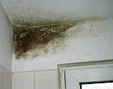
Information sur les cas de moisissure dans l’habitat. Comment éliminer les moisissures, éviter la prolifération des moisissures. Quelles erreurs sont à l’origine de la formation et la prolifération de la moisissure et des champignons microscopiques filamenteux, des microorganismes, des spores et des mycélien. Quels problèmes de santé en découlent : émissions des substances chimiques, allergies et maladies.Contamination fongique : Aspergillus flavus ou versicolor, Alternaria alternata, Aspergillus fumigatus et Aspergillus niger, Aspergillus ochraceus, Cladosporium cladosporioides, Fusarium sporotrichoides. Penicilium viridicatum, Penicilium chrysogenum, Penicilium crustosum, Penicilium expansum, Stachybotrys chartarum (atra), Mycotoxines, Contamination fongique.
Que recherchez-vous et pour quelles raisons? Est-ce que vous souhaitez vous débarrasser d’une invasion de moisi dans votre maison? Ou est-ce qu’un membre de votre famille souffre d’un climat malsain? Est-ce que votre santé est affectée par des réactions allergiques au moisi? Ou bien d’autres maladies relatées aux champignons microscopiques (comme l’asthme ou le rhume des foins)? Êtes-vous à la recherche d’une solution effective pour vous défaire définitivement des risques liés au moisi dans l’habitat ? Alors vous êtes ici peut-être à la bonne adresse. Voyez pour vous-même.
À quoi avons-nous à faire : la moisissure.
La moisissure (assortiment de champignon filamenteux de plusieurs types) peut être décrite comme la pousse de substance organique duveteuse sur des surfaces humides ou moites. Elle peut attaquer par exemple aussi le textile. Certains champignons comme l’aspergillus, le trichoderma, l’alternaria, le penicillium, les tachybotrys et le cladosporium sont toxiques et peuvent causer des réactions allergiques, voir des empoisonnements. Cela peut mener à des maladies sévères et provoquer des problèmes de santé variés. Car une grande partie de la population est allergique à la moisissure, les symptômes suivant une exposition (toucher ou inhaler des spores) aux agents allergènes.
Quels symptômes peuvent être une indication pour une exposition à des spores toxiques ?
Ici nous avons à prendre en considération des réactions variées comme :
- Irritation des yeux, sensibilité à la lumière, maux de tête constants, irritations cutanées (ex. dermatites)
- Irritations du nez et de la gorge, éternuements, symptomes similaires au rhume des foins (nez coulant, congestions nasales ou des sinus), symptomes ressemblant a de l’asthme (toux, difficultés respiratoires culminant dans des attaques d’asthme)
- Infections similaires à la grippe s’aggravant en pneumonie
- Difficultés de la mémoire, changements d’humeurs inexpliquées
- Et autres…
En considérant ces symptomes, vous pourriez supposer que presque tout le monde souffre des effets de la moisissure… et cela peut être bien proche de la réalité. Pourquoi ? Car de nos jours plus de 50 % des bâtiments modernes sont atteints par la moisissure. Ce qui veut dire qu’ils ont de sérieux problèmes de moisissure latente et sont inappropriés à l’habitat.

Commençons par les vraies causes qui provoquent la moisissure, et discutons des remèdes plus tard (vous pouvez sauter aux paragraphes suivant si vous ne souhaitez pas attendre). OK, vous allez découvrir un point de vue un peu vieux jeu allemand, mais peut être que ce n’est pas si loin de ce qui se passe chez vous. Certaines de mes explications et ma manière de présenter les faits peuvent être fortement en controverse avec ce que vous croyez savoir ou avoir déjà entendu. Mon expression en français n’est peut être pas des meilleures, mais il ne s’agit pas d’une leçon de langue mais d’une analyse des problèmes de moisi et de leur solutions dans le domaine de la construction et de la modernisation de maisons. Votre santé reste entre vos mains et celle de votre médecin.
C’est votre temps que vous investissez en lisant ces pages, mais d’accord, c’est aussi de votre habitat et de votre souci de moisi et de santé qu’il s’agit.
Alors en avant.
Une preuve d'action criminelle? Moisissure dans nos maisons par la loi? Par exemple en Allemagne: un pays en avant-garde et qui malgré toutes les résistances et objections soutient et prescrit par la loir la « EnergieEinsparVerordnung » (Réglementation Thermique), en bref la « EnEV ». De par cette philosophie bizarre, l’énergie ne peut être économisée,que par des bâtiments absolument hermétiques, fenêtres et murs et chaque recoin soigneusement calfeutré et isolé. Le résultat obtenu est stupéfiant : énergie économisée et climat malsain par prolifération de moisissure, et maintenant:
Extrait du journal « Sueddeutsche Zeitung » 16.01.2004:
» Aide du ministère de bâtiment
En 2004 le ministère allemand du bâtiment veut aider les utilisateurs en subventionnant des systèmes de ventilation de bâtiment. ... Le ministère réagit en conséquence aux nouveaux défis hygiéniques et de santés produites par les méthodes prescrites par loi d’économie de l’énergie dans le bâtiment en Allemagne. La maison isolée et hermétique n’empêche pas seulement les pertes de chaleur, mais aussi le changement d'air. L'air consommé s'accumule extrêmement vite. Lorsque les habitants ne veulent plus souffrir de l'odeur désagréable de l’air consommé, ils ont deux solutions: soit renouveler l'air en ouvrant les fenêtres toutes les quatre heures en moyenne – en jeter « par la fenêtre » l'énergie tellement coûteusement et laborieusement sauvée – ou installer un système moderne de ventilation. ... P.H. «
Combien de temps devrons-nous souffrir de telles actions insensées de « notre » administration? L'humidité et l'attaque de moisissure entre nos quatre murs, odeur de moisi flottant dans l’air ne tombent pas du ciel, mais ont des causes bien mondaines. Qui est le souverain de ce monde? Ah!Extrait du journal „DIE WELT » 27.5.03:
« Energie sauvée, mais spores fongueuses dans le poumon :La moisissure dans les maisons isolées cause de plus en plus d'allergie - poussière et déchets organiques tout comme moisissure.
Par Ulla Bettge
Stuttgart - les fenêtres démodées s'adaptent mieux pour une vieille maison avec les salles à haut plafond et de
style traditionnel. Cependant parfois la décision est prise d’échanger ces belles fenêtres contre des nouvelles
fenêtres hermétiques. Alors brusquement les échanges d'air sont bloqués - et les moisissures
affriolant de chaleur et d'humidité obtiennent des conditions parfaites de croissance.
Cela s'applique particulièrement aux maisons à énergie réduite, qui sont capitonnées avec du
plastique aussi bien que de polystyrène et de la fibre de verre. Selon une étude de la Friedrich-Schiller-Université de
Jena plus de 15 millions de citoyens allemands dans environ sept millions de logements ont un problème de moisissure dans leurs
murs, car les moisissures se développent par 85 à 95 pour cent d'humidité. La tendance augmente. »
Commentaire de K. Fischer:
Comme vous pouvez lire également dans la sainte bible, les murs humides existent depuis toujours. Ainsi les anciens
bâtisseurs employaient des matériaux de construction qui étaient plus adaptés à ce genre de
problèmes :
« Les matériaux de construction démodés comme les briques, l'argile et le bois sont poreux et peuvent donc
respirer, mais les nouveaux bâtiments des dernières décennies sont souvent en béton enveloppés de
polystyrène, ce qui les scellent hermétiquement. Les enduits et les peintures de latex, ainsi que les tapisseries
synthétiques font créent de surcroît une barrière. Ainsi le processus de régulation
d’humidité normal est stoppé et l'humidité s'accumule entre les plâtres et les enduits.
En outre les chauffages centraux favorisent une concentration plus élevée de l’humidité, car la consommation de
l'eau avec les toilettes, les douches, les bains, les machines à laver s’est multipliée en comparaison avec des
années 60… ...
Seul un renouvellement d’air frais permanent peut aider effectivement contrer l'humidité excessivement accrue dans les
maisons. ...
Dans ... un climat humide les bactéries, les virus et les spores se sentent à l’aise, prolifèrent et se
répartissent... en s’accrochant aux particules de poussière de maison elles trouvent un véhicule
idéal pour se répandre dans l'air… ...
Les spores microscopiques sont inhalées avec l'air et peuvent atteindre les régions respiratoires inférieures. Ainsi
les organes internes des personnes avec un système immunitaire affaibli peuvent souffrir également d’allergies. Les
acarides fongueux (poussière du type 100.000) dans la maison sont connus pour être les sources les plus importantes
d'allergène à l’intérieur des habitations. Les personnes allergiques réagissent à la «
pollution atmosphérique » avec des symptômes de refroidissement, des éternuements, le souffle court et de la
toux jusqu'à de l'asthme bronchique grave.
Auteur : Götz Wiedenroth: Kamikaze climat: Attaque de moisissure »
Ah, maintenant nous connaissons le vrai auteur de ce texte horrifiant: l'industrie pharmaceutique !!!.
Comment simplement y voir clair ? Et pourquoi aucun ne parle des faits, de ce qui peut vraiment aider contre tous les problèmes indiqués? Contre tout les symptômes cruels des maladies allergiques : les détresses respiratoires, les maladies étranges de peau, les empoisonnements toxiques, allégrement causés par l'aspergille noire (moisissure noire), ainsi que tous les autres effets des climats malsains dans l’habitat? Tout est causé par des méthodes modernes de construction de bâtiment !!! On produit des constructions hermétiques, les pierres de maçonnerie sont faites artificiellement, les enduits sont synthétiques l'isolation en plastique est sans effets! Comment se débarrasser des toux asthmatiques, des maux de tête, de la dermatite et des autres maladies provoquées par l’architecture moderne? Peut-être serait ce mieux d’essayer de ne plus employer la merde moderne que nous obtenons dans l’industries du bâtiment, chez les artisans fous et conseillée par les architectes et les ingénieurs grassouillets qui détruisent nos maisons, notre santé et notre vie par ignorance et pour le profit? Est-ce bien malin d’utiliser tous ces remèdes chimiques pour mettre fin à la moisissure, et de sponsoriser les fabricants et les producteurs de produits chimiques (et toxiques), chaudement recommandés par les « inspecteurs de moisissure »? Au lieu de cela il serait tellement plus sage, plus sain et économique d’améliorer la construction à la base : par exemple n’utiliser que de la brique et du bois plein, qui ont des surfaces parfaitement hygiéniques et adaptées aux échanges de condensation, employer du mortier de chaux et de la peintures à la chaux, mettre en place un chauffage sain de rayonnement contre la condensation des murs? Beaucoup plus n'est pas nécessaire du tout. Hélas, j’avais presqu’oublié: les vieilles fenêtres devraient être réparées et rester en place. Les nouvelles fenêtres ne devraient contenir aucun Isopane et aucun caoutchouc. C’est cette stratégie la meilleure que vous pouvez suivre pour assainir votre maison malade et bien construire et rénover. Pour pouvoir ainsi vivre sainement. Sans investir dans des systèmes chers et risqués de ventilation, sans inviter le moisi entre vos quatre murs. Et économiser beaucoup d'argent aussi bien en investissement qu’en frais d’assainissement.
Journal Mitteldeutsche Zeitung MZ 7/02:
» La moisissure devient Le problèmeL’association des ramoneurs consacrent leur conférence annuelle à l'hygiène de l'air
MZ/rgu. Plus de sept millions de logements en Allemagne sont concernés par la moisissure et des dommages dus à l’humidité. Ceci concerne approximativement 15 millions de personnes, rapporte Sabine Brasche de l'université de Léna hier à Halle. Ceci pourrait provoquer des troubles d'allergie et de respiration. La scientifique a présenté à l'association nationale des ramoneurs, qui tient sa conférence annuelle jusqu'à vendredi à Halle, les résultats d'une étude représentative (de la Friedrich-Schiller-université de Léna), ... selon laquelle approximativement sept millions de logements seraient endommagés par l’humidité et le développement de moisissure. Ceci représente « un potentiel considérable de risque pour la santé de 15 millions de personnes », ainsi l'auteur, Sabine Brasche. ...«
Qu’entreprennent la politique, les médias et l'économie contre ceci? Rien du tout. Au contraire, on s’agite encore plus pour isoler et calfeutrer nos maisons.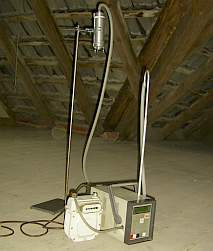
Avec un échantillon d'air vous pouvez mesurer les concentrations de polluant dans les pièces contaminées - ici une installation appropriée pour les matières toxiques dans le bois de construction.
Cliquez ici « la sottise des valeurs U »: l’un des mythes les plus dangereux et provocateurs de moisissure, dans la technique moderne du bâtiment. Elle se base uniquement sur le refroidissement des molécules d’air chaudes sur la surface du matériau testé, et non pas sur les différents transports de l'énergie calorifique à l’intérieur des matériaux. Ainsi les matériaux plus légers avec une moindre densité doivent (!) obtenir de meilleures valeurs U, et les matériaux plus denses doivent avoir une valeur U plus mauvaise - le résultat préfabriqué d’expertises falsifiées, du moins charlatanesque provenant des laboratoires de l’industrie de l’isolation.
Les médecins couvrent dans le cahier 45 du 10.11.2000 (S.B 2531): « Rapport Mycologie de Médecine »La moisissure - un cohabitant désagréable
« Afin de sauver les coûts énergétiques, on entreprend de nos jours des solutions par isolation, qui alimentent la prolifération des champignons microscopiques dans les maisons.
La concentration des espèces de moisissure thermophiles est plus élevée à l’intérieur des pièces qu’á l’extérieur, ce qui prend une signification médicale en ce qui concerne les maladies allergiques. Tout particulièrement par l’espèce « fumigatus d'aspergille ». Comme rapporté par DR Axel Schmidt (Wuppertal) au cours de la 34ème conférence scientifique de la Société Mycologique Allemande à Berlin, il est urgent de sensibiliser le grand public en ce qui concerne l'isolation des maisons selon les standards actuels.
Beaucoup de propriétaires et de locataires ont effectué une isolation hermétique de leurs logements en raison des coûts de chauffage qui montent rapidement. Mais des attaques de moisissure sont ainsi le prix à payer pour cette « épargne d’énergie ». Les propriétaires et locataires devraient être sensibilisé et conseillé en ce qui concerne les faits structurels du bâtiment, les stratégies d’isolation justifiables, la circulation d'air etc. , et tout particulièrement sur les raisons possibles de croissance de moisissure. Ils doivent être mis au courant de la nécessité d’une ventilation en continu et du comportement de ventilation (d'air) correcte, et de l’effet fatal d’un mauvais comportement (humidité), ainsi que quel placement de mobilier, quels revêtements de sol et de murs sont favorables contrent la prolifération par ex. des acariens. … DR Ferdinand Klinkhammer »
Cependant l'opposé se produit.Ainsi, que faire si la moisissure s’installe? Un guide utile - Combattre la moisissure - Comment détruire et éliminer la moisissure durablement.
Moisissure au mur - causes et stratégies d’élimination
Le sujet de la moisissure a aujourd'hui longue haleine. Habituellement la moisissure est provoquée par des méthodes incorrectes de construction, s’appuyant sur des doctrines faussées de la physique du bâtiment, d'aération incorrecte et de techniques imparfaite de chauffage. Les cas les plus fréquents sont présentés ci-dessous..
Remarque préliminaire: l'attaque de moisissure n’est pas seulement une insuffisance structurelle. Souvent elle est
accompagnée par des bactéries et la diffusion de substances parfois même toxiques. Il en découle des
dangers de santé considérables. Non seulement pour les enfants, mais également pour beaucoup d'adultes, qui deviennent
victime des symptômes typiques de la moisissure, par exemple l'asthme et l’allergie. La moisissure est composée de
champignons microscopiques produisant des germes responsables des mycoses, qui prolifèrent dans l'eau et laissent des traces
noires, tenaces sur les joints des sanitaires, de la cuisine, des carrelages et des fenêtres.
En même temps que de provoquer des traces humides et des attaques de moisissure, que l’on peut observer sur le haut du bois, une
attaque d’humidité peut causer également une propagation des parasites du bois aussi bien que de la
putréfaction sèche et humide, l'éponge blanche de pore, l'éponge brune de cave aussi bien que les vers de bois et
d'autres insectes détruisant le bois comme des termites. Par conséquent les recommandations suivantes ne peuvent être
comprises comme des solutions globales, elles doivent être accomplies par des experts au savoir-faire médical, mycologique
et maitrisant les technique spécialisé.
Humidité et moisissure dans l'habitation
Habituellement elles concernent les chambres à coucher moins réchauffées que le reste de l’habitation et aussi les autres secteurs plus frais. Devons-nous poser une isolation intérieure et/ou extérieure afin d'augmenter la température du mur et éviter « le mur glacial »? C’est ce qu’exige la physique «trafiquée » du bâtiment, ce qui mène souvent à des erreurs de construction et à bien des dommages de bâtiment.
Toutes ces stratégies isolantes n'aident pas du tout. La moisissure a besoin d'humidité. Celle ci provient – en dehors des extrêmes dus aux séchage des dalles de ciment et des enduits/plâtres durant la construction, ou bien des dommages occasionnels de plomberie, de toits perméables ou des vieilles cheminées – en abondance dans d'air ambiant des pièces à vivre. A partir d’un taux d’humidité relative élevé (65 % ou plus) la moisissure peut se développer. Un ménage de quatre personnes apporte par jour une quantité de 7-15 litres d'eau dans l'air, en faisant cuire, en lavant, en se baignant, en prenant des douches, par les fleurs et plantes, en respirant/suant etc… En outre une aération des pièces en ouvrant les fenêtres quelques minutes toutes les 2-3 heurs n'aide pas du tout.
L'air trop humide condense sur les surfaces fraîches et formes des poches d’eau dans les pores des matériaux de construction. Afin d'évaporer / sécher ceci, il faut dépenser de l'énergie.
L’aération ponctuelle par ouverture de fenêtres ne fournit cependant aucune énergie dans les pores saturés d’humidité condensée. Les murs extérieurs se refroidissent de plus en plus, procédé qui s’accélère avec le chauffage diminué (réduction de nuit), la condensation sur les murs se refroidit d’autant plus pendant la nuit, et on voit une condensation gelée sur les murs en hiver.
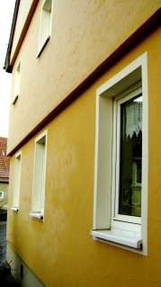
Image : Condensation gelée sur une isolation thermique externe (parties blanches/brillantes) d’une maison à colombage de cadre, le 9.1.06 à 8 heures, jour ensoleillés.En même temps la condensation se concentre dans les zones des pièces où la convection d'air de chauffage ne passe pas suffisamment: dans les zones de raccordement entre murs / plafonds / sols, dans des coins des pièces, au bas des murs, autour des fenêtres où l'air froid pénètre à lors des ouvertures d’aérations, et derrière des meubles. Tout particulièrement dans les salles-de-bain. Avec les calculs de la physique de bâtiment actuels on ne peut pas faire le pronostic correct de ces effets car les théories courantes ne tiennent pas compte de ces problèmes.
Ces secteurs incorrectement chauffés par les techniques conventionnelles de chauffage par circulation d’air sont interprétés incorrectement comme étant des « ponts de chaleur ». En conséquence les experts conseillent et exigent une isolation techniquement fausse des zones concernées. Quelques images provenant de mes consultations peuvent clarifier cela:
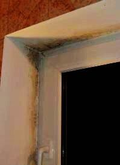
Image « Moisissure dans la salle-de-bain 1 »: L'humidité élevée apparaissant de manière ponctuelle (prise d’une douche par ex.) ne peut pas être absorbée par des murs carrelés. Donc l’humidité se dépose dans les matériaux absorbants restants, autour de la fenêtre. Cette zone est de plus celle qui se refroidit par l’aération manuelle (ouverture de fenêtre). Dans la région supérieure l'attaque correspondant aux flux d'air apparaît le plus intensivement et diminue en descendant. Impossible donc que cela soit un « pont de chaleur » (dans ce cas les tâches seraient uniformes).

Image « Moisissure noire dans la salle-de-bain 2 »: Revêtements de peinture plastifiés (acide) aux alentours
de la zone de refroidissement de la fenêtre, offrant un terrain de prolifération idéal pour la moisissure. Ici on a omit
d’utiliser un badigeon de chaux (basique). Le peu de temps d’échange de l’air après la douche ne suffit
pas à évacuer le surplus d’humidité. Pendant et après la douche l'humidité va pénétrer
dans le coin refroidi entre le mur et le plafond. Aussi: moisissures des joints et sur bordures de baignoire et de lavabo!
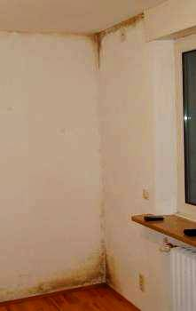
Image « Moisissure aux zones de transition mur-plancher et mur-plafond» : des fenêtres hyper-hermétiques, chauffage par convection d'air, réduction nocturne de la température! La condensation et la moisissure en sont les conséquences logiques. Devise: les enfants asthmatiques avec des maladies de la peau toussent mieux.
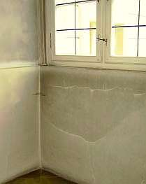
Image « Salissures » : l'humidité et la saleté sont transportés par l’air de convection du chauffage et se déposent sur la surface des murs.

Image « cave » : moisi dans les coins de murs trois mètres dans la terre. Cause : plomberie déffectueuse.
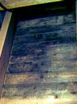
Image « moisissure dans le toit » : moisissure sur l'intérieur des panneaux de la toiture. La circulation insuffisante de l'air humide chaud sur des surfaces plus froides produit des moisissures.
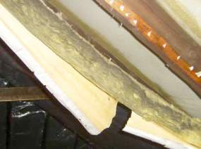
.
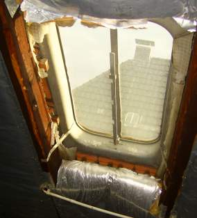
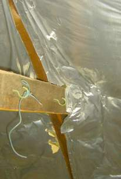
Image « Isolation moisie » : la laines de verre est imprégnée de moisissure. L’essai d’isoler hermétiquement une toiture, qui est conçue pour avoir un jeu de mouvement et qui a une construction compliquée est un nonsense. Des millions de logements américains et les milliers « de maisons passives » et « de maison à énergie réduite » dans les pays germaniques certifieront ceci irréfutable.
L'isolation de laines de verre imbibé de moisissure + isolation de laines de verre décomposée - images superbes de M. Bammer d'Autriche
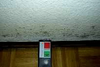
Image « Moisissure sur le papier peint imbibé de condensation » l'extérieur du mur est enveloppé dans du polystyrène, l’intérieur est plastifié par de la peinture de latex. Naturellement accompagné par des fenêtres hermétiques.
Pour faire le point: chaque type de matériau d’isolation fibreux, poreux et laineux est une fraude. Les études de comparaisons de coûts de chauffage des maisons isolées et non isolées, comme lors de l’expérimentation de Lichtenfels (d’après une expérience faite en 2001 dans la ville franconienne de Lichtenfels) témoignent, l’augmentation de la température sur l’un des côtés des matériaux traverse à grande vitesse les matériaux habituels d'isolation jusqu’à l'autre côté. Totalement contraire aux croyances modernes en dehors de toute pertinence des valeurs « R » employées de nos jours. Seuls les matériaux de construction pleins et denses, comme le bois et la pierre peuvent ralentir la propagation de la chaleur et des températures. Leur bonne absorption d'énergie thermique dans leurs surfaces denses ne nuira pas à leur insensibilité suprême aux chaleurs d'imprégnation par radiation infrarouge, la manière prédominante des transports de chaleur dans les matériaux.

Ce diagramme résumant notre « Essai de Lichtenfels » montre la température du matériau après
irradiation de 10 minutes par une ampoule de lampe infrarouge. La température au commencement (START) est de 20 °C. Chaque
matériau de valeur « R » différent est de 4 centimètres d'épaisseur, la température est
mesurée sur la surface opposée à la surface rayonnée après 10 minutes. Matériaux
testés: laines de verre/fibre de verre, polystyrène, brique pleine, mousse de verre, panneau de particules de bois,
plâtre cartonné, bois de pin plein. Résultat: la valeur « R » est une valeur complètement sans
signifiance pour la construction de bâtiments sous des conditions réelles. L’annonce des résultats par plusieurs
stations de TV en Allemagne a été grand choc pour l’industrie de l'isolation et leurs amis subornés dans la
branche du bâtiment et de l'administration politique. En résumé: pour sauver des coûts d'énergie
calorifique en employant l'isolation thermique typique il faut considérer également l’emmagasinement de
l’énergie solaire et la chaleur estivale, - et sur ce lien est l'évidence de la réalité.

Image : ce diagramme montre que les consommations d'énergie calorifique dans trois pièces de constructions de mur
différentes et de différentes valeurs « R » (k-Wert) pendant une période d'hiver, mesurées par
l’institut Fraunhofer pour la physique du bâtiment. Les murs isolés R: 0.16 et 0.32 ont les résultats les plus
mauvais, le mur non isolé R : 0.46 en brique est le meilleur! Détails.
Deux moyens simples peuvent aider:
En premier lieu assurer une perméabilité suffisante des fenêtres pour garantir un échange d'air. Les fenêtres hermétiques avec de joints en plastique sont les premières causes physiques de déclenchements du problème typique de moisissure. Le remède le plus simple est d’enlever le joint du haut de la fenêtre, pour que la pluie ne puisse pas pénétrer ! Et pas d’abord à chaque fenêtre, mais plutôt graduellement jusqu'à ce que le succès se montre.
Les vieilles fenêtres sans joint scellant hermétiquement étaient donc parfaites et jouaient un rôle technique important de désintoxication par la condensation sur le verre. Si les fenêtres hermétiques cependant sont obligatoires, il faut absolument installer en parallèle une ventilation artificielle couteuse, recommandée par les « experts ». Ainsi on installe un incubateur pour la moisissure, les spores, les insectes et les bactéries dangereuses, envahissant rapidement les filtres et les tuyaux de ventilation froids où naturellement l’humidité condense.
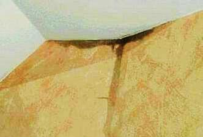
Image : ici vous pouvez observer une soupe de condensation noire horrible près de la sortie d’une bouche d’aération au plafond. À quoi cela ressemble-t-il là-dedans?
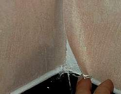
Image : papier peint mural imbibé de moisissures sur le bas. Un système de déshumidification ne semble pas pouvoir empêcher la condensation dans des zones du bas refroidies du mur.
Seul un système de chauffage par rayonnement infrarouge peut diminuer le risque de propagation de la moisissure car l’enveloppe de la pièce (murs, sol, plafond) est plus chaude que l’air ambiant. Le système de chauffage par convection réchauffe en priorité l'air de pièce, l’enveloppe restant plus fraiche que l'air ambiant. De plus les mouvements d’air humide causent des « courants d’air » permanents - pas la vieille fenêtre suspectée! Contrairement au vieux chauffage par poêle, le chauffage central ne peut pas purifier l’air ambiant en transportant l'air consommé par la cheminée et ne livrera pas « automatiquement » l'air frais sec par les joints de fenêtre légèrement entre-ouverts. La condensation dans le mur et la moisissure en sont les conséquences.
Une aide simple peut résoudre le problème : en plaçant les tuyaux de chauffage central – non isolés - en un « cercle de chauffage » le long des plinthes, avec une circulation permanente d'eau chaude. Un chauffage de rayonnement réchauffera en priorité les matériaux avoisinants plus que l'air. Quoi qu'il en soit les systèmes de chauffage à convection d’air sont nocifs à votre santé: ils maltraitent et polluent notre nourriture plus importante - l'air respirable. Par ailleurs le chauffage par air peut et va détruire des fournitures et pièces exposées dans les musés, des intérieurs exclusifs des monuments, des peintures et toutes les sortes de constructions en bois grâce à la circulation d’air chaude sur les surfaces de murs froids. En outre, le chauffage avec rayons de infrarouge protéger le construction et l'équipement d'être détruit par des champignons de putréfaction, par des vrillettes et la corrosion. Le système de tempérage / chauffage par irradiation de infrarouge (en allemand: « Huellflaechentemperierung ») est donc avantageux non seulement en tant que protection parfaite contre la moisissure.
Attaque cachée de moisissure provoquée par des fuites de tuyaux
Il y a beaucoup de causes de fuites de tuyaux. Considérez également la condensation de l’air humide sur les tuyaux frais. Dans ce contexte, les composants du bâtiment comme la maçonnerie, le plâtre, la chape de ciment, l’isolation etc., ne peuvent pas stocker l'humidité par manque de séchage jusqu’au jugement dernier. Le résultat probable est amer: développement caché de la moisissure et de la putréfaction sèche ou humide. Symptômes possibles: odeurs de moisi, indispositions de santé sans causes claire, mais également dispersion des spores et de la moisissure évidente au niveau des plinthes.
Obligatoires pour la découverte et l'analyse de l'attaque de moisissure sont les conditions physiques mais aussi bien que le statut microbiologique. Peut-être que le nez d'un « chien de moisissure » bien entrainé fonctionne bien à proximité des surfaces concernées mais il ne peut pas effectuer une analyse et une thérapie correctes. Des remèdes adaptés doivent être décidés selon la situation, cela va du séchage technique à l'échange complet des matériaux putréfiés et envahis de moisissure etc….
Attaque de moisissure par l'humidité dans une nouvelle constructionLe montant élevé et durable d'humidité contenue et dégagée par les composants du bâtiment incorporés comme le plâtre, l'enduit, la dalle de ciment, la maçonnerie, etc. est très souvent sous-estimé. Il cause une humidité accrue dans l’air qui doit impérativement être évacuée du bâtiment afin d'éviter la moisissure. Un week-end avec les portes et les fenêtres fermées après la fin de chantier, et le lundi toutes les surfaces peuvent étonner avec une couche décorative de moisissure. Les mesures à prendre pour évacuer l’humidité : assurer un bon échange d'air, appliquer un réchauffage approprié, considérer les zones à risque (déjà pendant la construction), mais également préférer d’emblée de la technologie de construction « sèche ».
Pour l'évacuation à long terme de l'humidité emmagasinée dans le bâtiment, qui causera également des dommages apparaissant étonnamment des mois plus tard, allant de sols déformés à l’attaque de moisissure, des mesures habituellement très extensives doivent être prévues pendant la construction. La technologie de la construction sèche, chauffage permanent des zones dangereuses fonctionnera pour la réduction suffisante de l’humidité et combattra l'attaque de moisissure.
Attaque de moisissure en raison des surfaces humides de bâtiment
D'abord, comme déjà évoqué plus haut, tout air chaud condense sur des surfaces plus fraîches. Car les murs de cave ou des pièces non chauffées sont particulièrement frais comparés à l’air chaud et humide d'été, d’où ils peuvent extraire une quantité extrême de condensation (comme chacun le sait qui ouvre une porte de cave en été).
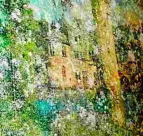
Image : moisissure en surface de mur. Puzzle moisie par condensation dans une cave. Non pas par humidité « remontante » du sol, mais par condensation de l'humidité de l’air extérieur qui s’engouffre dans la pièce, et laisse foisonner la moisissure, la putréfaction sèche-et-humide et les spores.
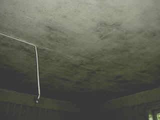
+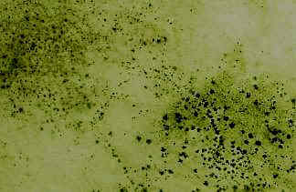
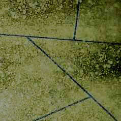
Image : Les murs et les plafonds, recouverts de peinture plastifiés ou traités avec des enduits organiques et exposés à l’humidité, sont propices à la reproduction et l’attaque des moisissures.
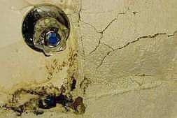
Image : gonflement par formation de minéraux de sel. Le plâtre de ciment, enrichie de C3A, réagit avec l'humidité sous terre a saturée de CaS04 pour former un minéral de sel (ettringite) avec pour conséquence un gonflement énorme de volume. En résultat le ciment (et également le pavé) « éclate ». Avec en prime une attaque de moisissure noire.
L'échange d'air devrait donc seulement être effectué si l'air extérieur est plus frais que la surface des murs. C'est impossible dans des secteurs d'entrée aussi bien que dans toutes les pièces non chauffées avec un raccordement extérieur pendant des jours chauds d'été. Ici des matériaux avec une bonne propriété de séchage capillaire (hydratic pur et non hydraulique ! ne pas égaliser avec « hydraulique naturelle » ! !) comme la mortier et le blanchir de chaux sont avantageux.
« La valeur de diffusion» souvent fièrement promise de beaucoup d’enduits plastifiés est malheureusement sans aucune pertinence. Leurs composants imperméables à l'eau bloquent le séchage capillaire. Important à savoir: le transport de l'eau dans les matériaux de construction est de 1000 à 1 plus fluide dans les pores capillaires que sous forme de vapeur. Ainsi la diffusion de vapeur ne fonctionne pas du tout et est un canular et un article truqué typique de notre chimie du bâtiment bien aimée.
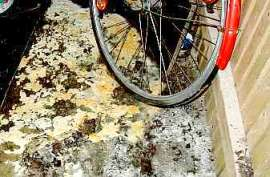
Myzel de champignon de putréfaction sèche sous le revêtement de sol la d’une cave aérée. Les méthodes simples et bon marché peuvent remédier à ceci, contrairement aux contes des soi-disant « experts ». Ceux-ci emploient de préférence des moyens toxiques contre les vers de bois, les coléoptères et autres insectes préjudiciables du bois. Pour se débarrasser de tous ces « amis » endommageant que vous ne les tuerez pas avec substances poison il suffit d’enlever les pièces abimées, réparer, et maintenir votre maison sèche (bois < 15% d’humidité, air < 65% d’humidité) par un meilleur chauffage et une ventilation lente permanente d'air. Si votre maison est atteinte, peut-être que le conseil expert fonctionnerait contre de tels amis, mais cela serait-il très amical avec vous et votre famille?
La deuxième source d'humidité provient de la terre. Mais ce n'est pas la prétendue « humidité remontante ». Celle-ci est tout à fait impossible dans la maçonnerie habituelle: il n'y a aucune possibilité de transport capillaire des pierres à pores fines au mortier à grands pores. Les soupes et les sauces chimiques injectés n'aident pas du tout, mais endommagent plutôt la maçonnerie.
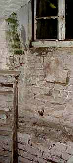
Image : algues sur le mur de cave. Les algues se développent particulièrement en été et la couche verdâtre n’est en aucun cas le résultat « d'humidité remontante ». Les mesures chères et cruelles aussi bien de blocage horizontal que de « plâtre réparateur » ne peuvent rien du tout faire contre cette humidité.
La vraie cause de l’humidité est habituellement une excavation de bâtiment imperméable à l'eau, remplie de matériaux perméables, avec peut-être en plus des tuyaux fissurés par la pression du bâtiment qui travaille. Par les pluies abondantes le puits se rempli et sous la pression latérale l’eau franchi la barrière de construction, et également par le sol. Un drainage défectueux peut aggraver la situation.
Au mieux et au moins cher aide le calfeutrage du puits d’excavation avec de l'argile « normale » et bon marché imperméable à l'eau, en commençant par le bas. Comme cette méthode est comparativement simple, vous pouvez l’effectuer vous même. Des tuyaux défectueux peuvent être repérés par des caméras et réparés ponctuellement.
Moisissure et algues sur la façade
Une orientation défavorable de la façade (côté pluie) et les méthodes préjudiciables comme l'isolation thermique extérieure sont la recette pour obtenir une façade noire, verte et brune de moisi. Une peinture plastifiée augment les chances d'attaque. L’humidité de l’air se condense sur la façade et se loge dans les fissures de la peinture vieillissante. Celle-ci ne possède aucune qualité de capillarité et retient l’humidité. Et voilà, un terrain parfait de propagation d’algues et de moisissure. Ces peintures spéciales sont bourrées d’additifs anti-algue (algicide) et anti-champignons (fongicide), seulement ceux-ci se diluent par la pluie et polluent vos sols de jardin.
Les façades isolées thermiques ne peuvent –logiquement— pas stocker la chaleur, quelles soient faites de pierres poreuses, de mousse, de fibres ou de laine. Par conséquent elles se refroidissent chaque soir très rapidement. En réaction l'air refroidissant se condense sur la surface plus froide de la façade et fournit les conditions nécessaires de croissance pour la moisissure et les algues. Les chevilles de fixation plus chaudes attirent moins la condensation. Leur zone obtiendra donc moins de moisissure. L'industrie cependant a trouvé rapidement le remède offre maintenant des chevilles mieux isolées, ainsi la croissance d'algues est uniforme sur toute la façade……
Maintenant vous pouvez nettoyer la façade moisie régulièrement, un entretient qui se répète indéfiniment, réparer encore et encore les fissures et repeindre régulièrement avec de la peinture plastifiée pleine de poisons. En fin de compte une réparation de façade avec les produits à la chaux, la protection suffisante des intempéries et - si vraiment nécessaire – une façade en rideau de bois avec circulation d’air qui sèche mieux, offrent de meilleures solutions de rechange.

Image : attaque d’algues sur l'isolation thermique. Extrait de« attaque d'algues sur l'isolation thermique de façade
» [recherche] L'isolation thermique ; dans: « Bautenschutz & Bausanierung », le périodique pour l'entretien du
bâtiment et des monuments, en janvier 2002, p. 44, auteur de photo: Université Wismar, scanné par K.F.
Réparation et nettoyage de l'attaque
Réparation et nettoyage de l'attaque
La réparation, le nettoyage et un nouvel enduit des surfaces attaquées ou bien l'échange complet des matériaux
souillés exige des précautions et une surveillance des effets. Sans éliminer les causes des attaques, il n'y a
naturellement aucun succès durable.
Prêtez attention également au fait que certains matériaux fonctionnent en tant que substrat idéaux pour la prolifération de moisissure. Les meilleurs matériaux « d’élevage » sont le papier peint, la cellulose, les joints communs synthétiques, les plâtres et les enduits. Ou bien vous pouvez préférer des matériaux naturellement fongicides tels que les mortiers de chaux et les lavages de chaux – à vous de décider.
Pour le nettoyage de moisi des surfaces, l'alcool bon marché (facilement inflammable !) fournit le meilleur résultat. L'alcool déshydrate le substrat en profondeur. Les autres poisons ou acides toxiques ne peuvent pas être recommandés. La moisissure aimer les milieux aigres avec un pH < 7-8 que les enduits synthétiques justement délivrent. La haute valeur basique des produits purs de chaux protègent contre la nouvelle attaque - sans addition de poison risquée pour la santé (fongicides/algicides chimiques).
Peut-être vous ne trouverez pas toutes les informations que vous souhaitez ici pour vous débarrasser de votre cas spécial de moisissure. Mon site internet « Restauration de la Maison Ancienne + Conservation des Monuments historiques - Journal d'Architecture + Construction pratique » vous offre plus de 1500 pages supplémentaires traitant des sujets variés.
Dipl. - Ing. Konrad Fischer, architecte BYAK, Hochstadt
Supplément - un conseil d'un forum sur l’allergie:
Dans beaucoup de cas de maladies allergique dans les maisons humides j'ai découvert que le problème de mauvais air dans les bâtiments modernes est relié aux fenêtres hermétiques. Pendant le jour beaucoup d'humidité est produite et ne peut pas être échangée correctement contre de l'air sec frais de l'extérieur, en raison des fenêtres hermétiques. Ainsi je recommande de retirer seulement le joint caoutchoucs supérieurs des fenêtres. Alors une petite quantité d'air frais entrera en permanence et l'air souillé sortira pendant le jour et la nuit. Le renouvellement d'air pratiqué à fenêtres grandes ouvertes que les quelques temps pendant le jour ne suffit pas pour se débarrasser de l'air humide.
De plus il se peut que l'humidité se condense dans l'isolation du mur. L'isolation thermique est plus froide que l'air, ainsi la condensation se produira là. Alors le condensat ne peut pas sécher car il n'y a aucune activité capillaire en de tels matériaux. Vous pouvez vérifier ceci en faisant une ouverture dans votre mur et pour aller vérifier l’intérieur de l'isolation. Elle peut sembler grise à cause de la présence de moisissure. L'isolation humide et moisie doit être échangée contre de meilleurs matériaux qui peuvent s’accommoder de la condensation comme le bois ou les briques plein.
La prochaine chose serait de clôturer les autres ouvertures après que les caoutchoucs supérieurs des fenêtres soient enlevés. Il peut encore y avoir quelques endroits où la moisissure et l'humidité restent après le nettoyage et peut se répandre dans l'air.
Normalement ces actions seraient suffisantes pour obtenir de meilleures conditions en atmosphère de pièce et de se débarrasser de la contamination de moisie. Les spores de moisissure sont des substances normales qui existent dans l’air intérieur et extérieur. Seul le taux de spores est le problème qui peut causer des allergies, de l’asthme etc… Réduire le taux de spores allergiques de moisissure par meilleure aération, retirer les matériaux contaminés, stopper les passages de moisi - ce serait le conseil.
Bonne chance !
Konrad
Restauration de la Maison Ancienne + Conservation des Monuments historiques - Journal d'Architecture + Construction pratique
Page de début en allemand/Deutsche Startseite "Online-Magazin: Altbau und Denkmalpflege Informationen"
Consultation spécifique de moisissure
Parasite en bois - que faire? Annuaire-NORD-FRANCE Annuaire-Site-And-Blog-Avesnois